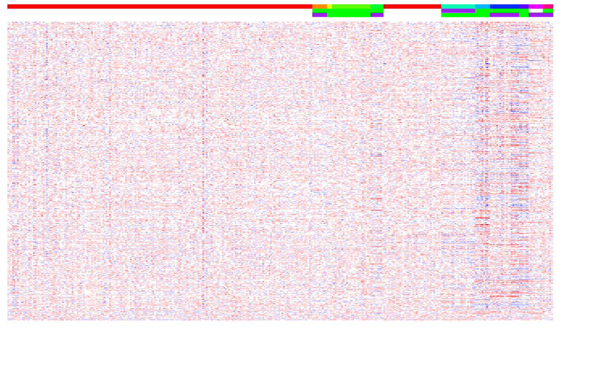
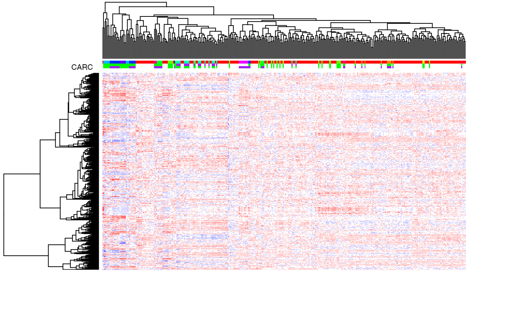
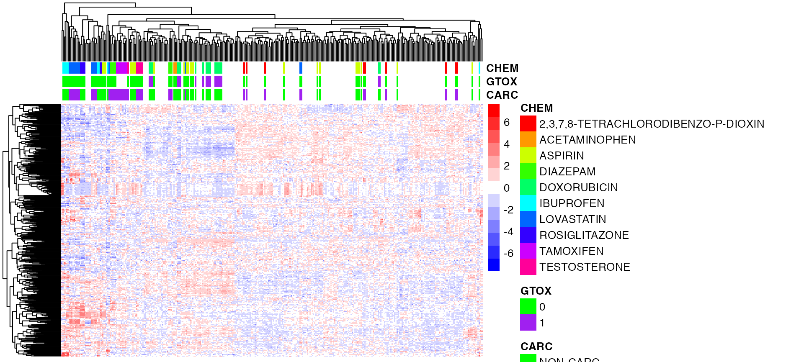
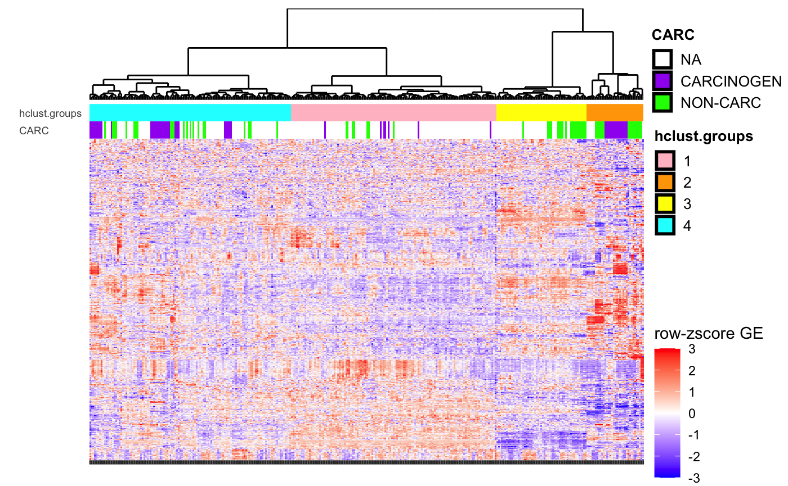
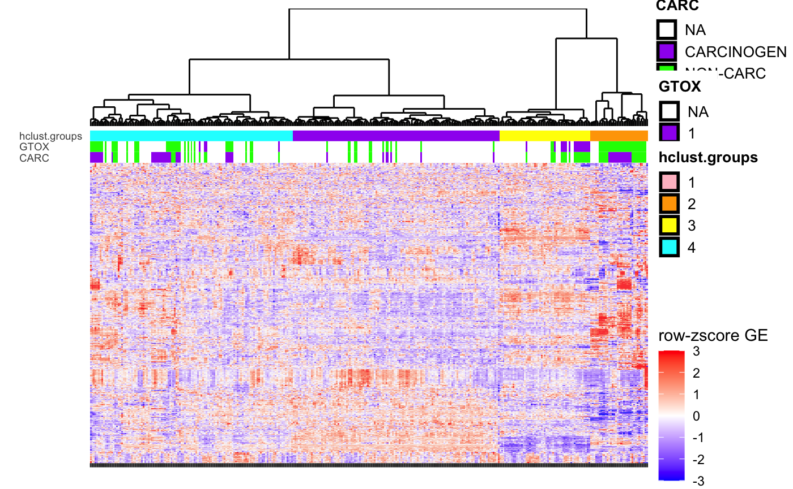
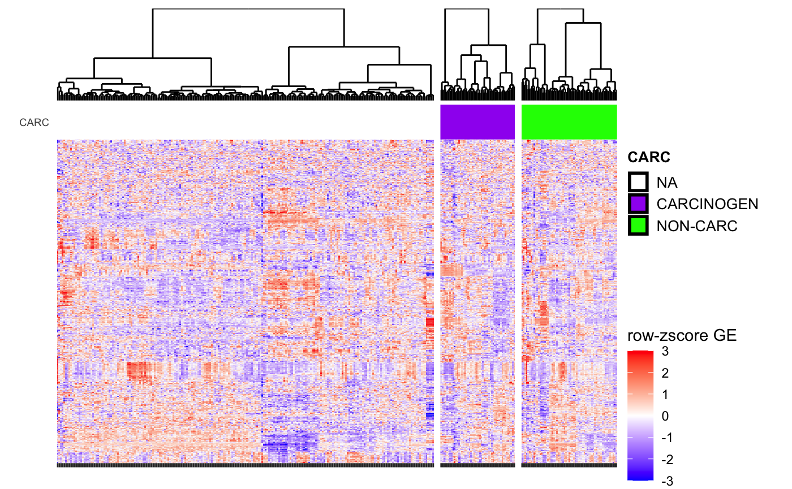
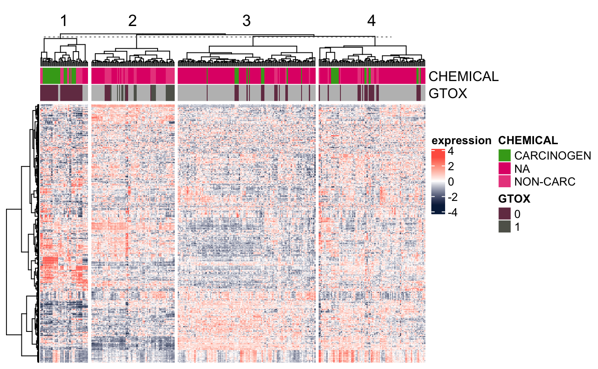

require(BS831)
require(cba)
require(heatmap.plus)
require(pheatmap)
require(Biobase)
require(ggdendro)
require(scales)
require(gtable)
require(gridExtra)
library(ComplexHeatmap)
library(circlize)We will use the DrugMatrix subset previously described for our examples. This data corresponds to chemical perturbation experiments, whereby rats are exposed to different chemicals, and their liver’s RNA is profiled. The chemicals are annotated both in terms of their carcinogenicity and their genotoxicity, and we will use these two phenotypes to color-code the samples in the visualized heatmaps.
data(dm10)
DM <- variationFilter(dm10, ngenes=500,do.plot=FALSE)## Variation filtering based on mad .. done.
## Selecting top 500 by mad .. done, 500 genes selected.heatmap.plus
We will begin by using heatmap.plus to visualize the data. Let us first define a simple function to create a color gradient to be used for coloring the gene expression heatmaps (this function is already defined in the CBMRtools package).
colGradient <- function( cols, length, cmax=255 )
{
## e.g., to create a white-to-red gradient with 10 levels
##
## col.gradient(cols=c('white','red'),length=10)
##
## or, to create a blue-to-white-to-red gradients with 9 colors (4 blue's, white, 4 red's)
##
## col.gradient(cols=c('blue','white','red'),length=9)
##
ramp <- colorRamp(cols)
rgb( ramp(seq(0,1,length=length)), max=cmax )
}Next, let us establish the color coding of the samples in terms of their carcinogenicity (NA/negative/positive) and genotoxicity (NA/0/1). Notice the use of the function rainbow (to generate multiple colors), and the use of the function match to pair sample annotation to colors.
## color coding of the samples indicating carcinogenicity status and chemical
chemicals <- unique(pData(dm10)[,"CHEMICAL"])
chemPalette <- c("white","green","purple") # we will use the same colors for carc and gtox
CSC <- cbind(CARC=chemPalette[match(pData(DM)[,"Carcinogen_liv"],c(NA,"NON-CARC","CARCINOGEN"))],
GTOX=chemPalette[match(pData(DM)[,"GenTox"],c(NA,0,1))],
CHEM=rainbow(length(chemicals))[match(pData(DM)[,"CHEMICAL"],chemicals)])
## color gradient for the expression levels (blue=down-regulated; white=neutral; red=up-regulated)
bwrPalette <- colGradient(c("blue","white","red"),length=13)
## draw the heatmap (hide row and col labels since they'd be
## unreadable. Also don't sort rows and columns by hierarchical
## clustering, by setting Rowv and Colv to 'NA')
heatmap.plus(exprs(DM),Rowv=NA,Colv=NA,col=bwrPalette,ColSideColors=CSC,labCol=NA,labRow=NA)
We now plot the heatmap with the rows and columns sorted by hierarchical clustering (see Rmodule_hclust.Rmd), by not setting the parameters Rowv and Colv.
heatmap.plus(exprs(DM),col=bwrPalette,ColSideColors=CSC,labCol=NA,labRow=NA)
Notice that the color-coding of the expression matrix is somewhat saturated, and does not allow for the highlighting of differential expression among samples. The subsequent visualization functions have a more sophisticated coding of the expression ranges, and will allow for better visualization.
pheatmap
We next illustrate the use of the function pheatmap from the pheatmap package. This function only requires a numeric matrix as input. As with heatmap.plus it allows for annotation of columns and rows, but with different formatting requirements. It can perform different clustering methods on rows an columns, either by specifying parameters of the clustering method to use, or by inputting the output of free-standing clustering functions such as hclust. Check ?pheatmap to explore different arguments you can set, there are a lot of them.
First we will format the phenotype annotation for the columns of the heatmap, as well as specify the colors for each category for each variable.
annot <- pData(DM)[, c("Carcinogen_liv", "GenTox", "CHEMICAL")]
colnames(annot) <- c("CARC", "GTOX", "CHEM")
annot$CHEM[annot$CHEM == ""] <- NA
annot$CHEM <- factor(annot$CHEM, levels = levels(annot$CHEM)[levels(annot$CHEM)!=""])
annot$GTOX <- as.factor(annot$GTOX)
annotCol <- list(
CARC = chemPalette[-1],
GTOX = chemPalette[-1],
CHEM = rainbow(length(levels(annot$CHEM)))
)
names(annotCol$CARC) <- c("NON-CARC","CARCINOGEN")
names(annotCol$GTOX) <- c("0","1")
names(annotCol$CHEM) <- levels(annot$CHEM)Next, we will create the heatmap, given the expression matrix from DrugMatrix. Note that the argument scale = "row", specifies that we want to scale each row (or gene) to mean zero, and let the colors denote the number of standard deviations from the mean.
pheatmap(exprs(DM),
color=bwrPalette,
annotation_col = annot,
annotation_colors = annotCol,
show_rownames = FALSE,
show_colnames = FALSE,
scale = "row")
CBMRtools::ggheat.continuous
We next illustrate the use of a custom heatmap function that uses ggplot2 and is part of our package CBMRtools. This heatmap supports multiple column phenotype labeling, custom heatmap color gradient, and column clustering within user-specified sample groups.
#simplify chemical carcinogen status label for plotting purposes
DM$CARC <- as.character(DM$Carcinogen_liv)
DM$CARC[is.na(DM$CARC)] <- "NA"
DM$GTOX <- as.character(DM$GenTox)
DM$GTOX[is.na(DM$GTOX)] <- "NA"
#specify column and row clustering
#clust_eset is a custom clustering function we created for standard gene expression hierarchical clustering
print(clust_eset)## function(eset){
## mat<-Biobase::exprs(eset)
##
## #column clustering
## #using euclidean distance, ward.D agglomeration
## distC <- function(x) dist(t(x), method="euclidean")
## dist_c<-distC(mat)
## hc<-hcopt(dist_c, method = "ward.D")
##
## #row clustering
## #using 1-cor as distance, ward.D agglomeration
## distR <- function(x) stats::as.dist(1- cor(t(x)))
## dist_r<-distR(mat)
## hr<-hcopt(dist_r, method = "ward.D")
##
## return(list(hc = hc, hr = hr))
## }
## <environment: namespace:BS831>Below, we use hierarchical clustering to group samples and genes according to their similarity. See the module Rmodule_hclust.Rmd for more details on the clustering method and the R function implementing it, hclust.
hc <- clust_eset(DM)
print(hc) # show the 'innards' of the returned object## $hc
##
## Call:
## hclust(d = d, method = method, members = members)
##
## Cluster method : ward.D
## Distance : euclidean
## Number of objects: 338
##
##
## $hr
##
## Call:
## hclust(d = d, method = method, members = members)
##
## Cluster method : ward.D
## Number of objects: 500# Use column (i.e., sample) clusters as one of the phenotype labels to plot
pData(DM)$hclust.groups <- as.factor(cutree(hc$hc, k = 4))
# Scale expression by row (for visualization purpose only), hence do
# this step after clustering is defined on pre-scaled data
print(scale_row)## function(eset){
## rowz<-t(apply(Biobase::exprs(eset), 1, function(z)
## scale(z)))
## Biobase::exprs(eset)<-rowz
## return(eset)
## }
## <environment: namespace:BS831>dat.scaled <- scale_row(DM)
carcstatus <- c("NA", "CARCINOGEN", "NON-CARC")
gtoxstatus <- c("NA", "1", "0")
cluststatus <- levels(pData(DM)$hclust.groups)
# Color legends for column labels: here we plot CARC and hclust.groups
col_legend <- list(
CARC = list(col_breaks = carcstatus,
col_values = sapply(c("white", "purple", "green"), to.hex),
col_labels = carcstatus),
hclust.groups = list(col_breaks = cluststatus,
col_values = sapply(c("pink", "orange", "yellow", "cyan"), to.hex),
col_labels = cluststatus)
)
# heatmap fill gradient
hmcolors <- function(...) scale_fill_gradient2(low = "blue", mid = "white",
high="red", midpoint=0, limits=c(-3,3), oob=squish, ...)
p <- ggheat.continuous.single(
eset = dat.scaled,
hc = hc$hc,
hr = hc$hr,
hmcolors = hmcolors,
hmtitle = "row-zscore GE",
col_lab = c("CARC", "hclust.groups"),
col_legend = col_legend,
ylabstr = "",
fout = NA,
p.heights = c(1.5, 0.5, 5),
xsize = 0,
ysize = 0,
ysizelab = 7,
xright = 0.18
)
# You can see the carc/noncarc distribution within clusters is
# consistent with heatmap column labels
table(DM$CARC, DM$hclust.groups)##
## 1 2 3 4
## CARCINOGEN 7 14 0 29
## NA 111 6 36 72
## NON-CARC 7 15 19 22We can also plot groups of heatmaps and do column clustering within each group. Here we specify the groups as (carc) pos, neg, and na.
# Color legends for column labels: here we plot CARC, hclust.groups, and GTOX
col_legend <- list(
CARC = list(col_breaks = carcstatus,
col_values = sapply(c("white", "purple", "green"), to.hex),
col_labels = carcstatus),
GTOX = list(col_breaks = gtoxstatus,
col_values = sapply(c("white", "purple", "green"), to.hex),
col_labels = gtoxstatus),
hclust.groups = list(col_breaks = cluststatus,
col_values = sapply(c("pink", "orange", "yellow", "cyan"), to.hex),
col_labels = cluststatus)
)
p <- ggheat.continuous.single(
eset = dat.scaled,
hc = hc$hc,
hr = hc$hr,
hmcolors = hmcolors,
hmtitle = "row-zscore GE",
col_lab = c("CARC", "GTOX", "hclust.groups"),
col_legend = col_legend,
ylabstr = "",
fout = NA,
p.heights = c(2.0, 0.5, 5),
xsize = 0,
ysize = 0,
ysizelab = 7,
xright = 0.18
)
grps <- ggheat.make.groups(
eset = DM, # the expression set
labelcol = "CARC", # column name for grouping in pData(eset)
labelvals = carcstatus, # values to group on (e.g. factor levels of pData(eset)[, labelcol])
clustFUN = clust_eset # clustering function for eset
)
col_legend <- list(CARC = list(col_breaks = carcstatus,
col_values = sapply(c("white", "purple", "green"), to.hex),
col_labels = carcstatus))
esetlist <- lapply(grps$esetlist, function(i) scale_row(i))
p <- ggheat.continuous.group(
esetlist,
grps$hclist,
grps$hrlist,
hmcolors,
hmtitle = "row-zscore GE",
col_lab = "CARC",
col_legend = col_legend,
ylabstr = "",
fout = NA,
p.heights = c(1.5, 0.5, 5),
xsize = 0,
ysize = 0,
ysizelab = 7,
xleft = 0.10,
xright = 0.24
)
ComplexHeatmap
# Pull out expression matrix
mat <- Biobase::exprs(dat.scaled)
# Take columns you want from phenotype data
ha.t <- HeatmapAnnotation(CHEMICAL=dat.scaled$CARC,
GTOX=as.factor(dat.scaled$GenTox))
Heatmap(mat,
name="expression",
col=colorRamp2(c(-3, 0, 3), c("#072448", "white", "#ff6150")),
top_annotation=ha.t,
cluster_rows=TRUE,
cluster_columns=TRUE,
clustering_distance_rows="euclidean",
clustering_method_rows="ward.D",
clustering_distance_columns="euclidean",
clustering_method_columns="ward.D",
column_km=4,
show_parent_dend_line=TRUE,
row_title="",
show_column_names=FALSE,
show_row_names=FALSE)